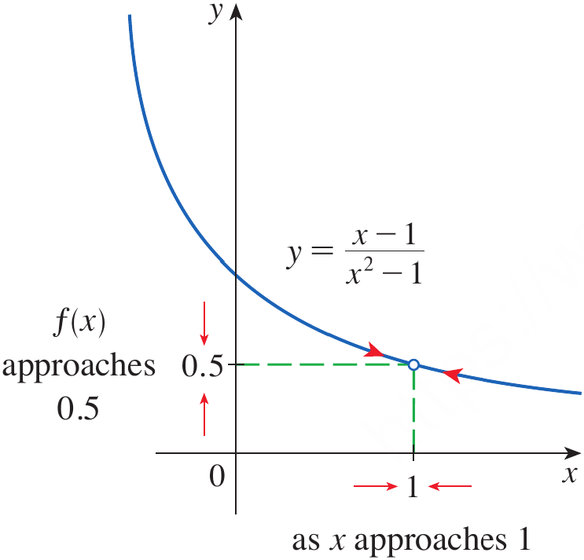
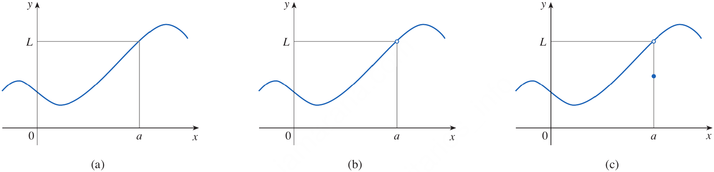
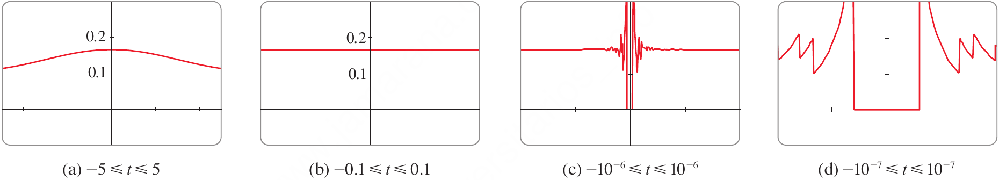
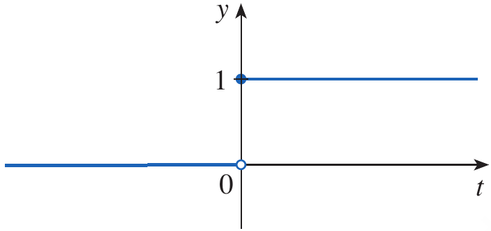
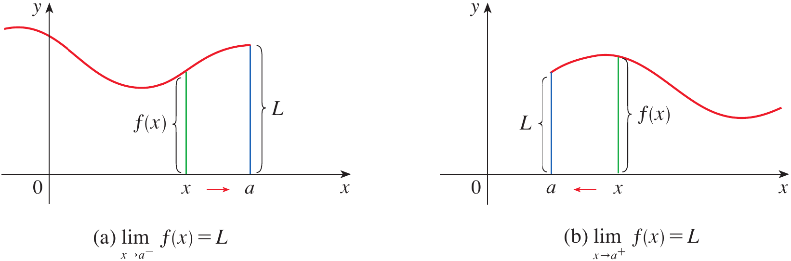
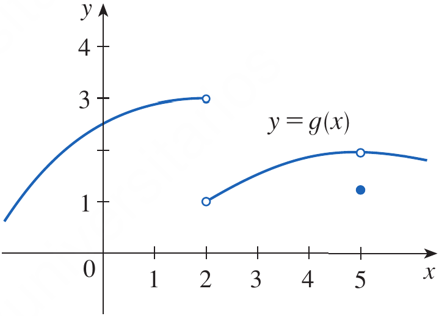

After preparing this topic, you should be able
To estimate and interpret the limit of a function numerically and graphically as the independent variable approaches a particular value.
To understand left-hand and right-hand limits and use them to determine whether a two-sided limit exists.
To identify the different ways in which a limit can fail to exist and recognize why numerical calculations and graphs can sometimes give misleading conclusions.
To understand infinite limits and use one-sided behavior to identify vertical asymptotes of functions.
In engineering, we frequently need to understand what happens to a physical quantity when another quantity gets very close to a particular value.
For example, suppose the displacement of a vibrating mechanical component is described by a function s(t), and we want to know what happens to its velocity as the time t approaches a particular instant.
At first, we may not have an algebraic method for calculating the required value directly.
We can instead investigate values of the function for numbers increasingly close to the point of interest and observe the corresponding behavior.
Tables provide numerical evidence, while graphs allow us to see the overall behavior visually.
Therefore, numerical and graphical methods provide an intuitive first approach to the concept of a limit.
The following type of mechanical-engineering problem can be handled by studying the first objective.
A sensor records the response of a mechanical system by a function R(t). The system behaves differently at an exact operating time, but we want to determine what value the response approaches as t gets closer and closer to that time.
We will be able to estimate the required value from a table and graph.
In many physical systems, behavior may be different immediately before and immediately after a particular point.
For example, a mechanical mechanism may change its operating mode when a control parameter reaches a critical value.
The response approaching the critical value from below may therefore be different from the response approaching it from above.
A two-sided limit can exist only when the function approaches the same value from both directions.
Therefore, left-hand and right-hand limits allow us to examine the behavior on each side separately.
This idea is especially useful for piecewise-defined functions, switching mechanisms, and engineering models involving sudden changes.
The following type of problem can be handled by studying one-sided limits.
A mechanical control system changes its operating rule when the input reaches a critical setting c.
We want to determine whether the system response approaches the same value as the setting approaches c from below and from above.
It is not always true that a function approaches a single number as x approaches a particular value.
A limit can fail to exist because the left-hand and right-hand limits are different.
A limit can also fail to exist because the function oscillates indefinitely or because its values become arbitrarily large.
Recognizing these possibilities prevents us from making an incorrect conclusion simply by examining a few numerical values.
This is important in engineering because oscillatory behavior and rapidly increasing responses can indicate important characteristics of a physical system.
For example, a mathematical model may oscillate increasingly rapidly near a particular operating condition.
A few calculator values might suggest a particular limit even though the function does not actually approach a single number.
These situations can be understood by studying the different ways in which a limit can fail to exist.
f(x)=\frac{x-1}{x^2-1}
We want to investigate the behavior of f(x) for values of x close to 1 but not equal to 1.
A table of values from both sides of 1 gives
Table 1. Values of x and corresponding f(x) values.
| x<1 | f(x) | x>1 | f(x) |
|---|---|---|---|
| 0.5 | 0.666667 | 1.5 | 0.400000 |
| 0.9 | 0.526316 | 1.1 | 0.476190 |
| 0.99 | 0.502513 | 1.01 | 0.497512 |
| 0.999 | 0.500250 | 1.001 | 0.499750 |
| 0.9999 | 0.500025 | 1.0001 | 0.499975 |
As x approaches 1 from either side, the values of f(x) approach 0.5.
Therefore, we estimate that
\lim_{x\to1}\frac{x-1}{x^2-1}=0.5

Figure 1. The graph of f(x)=\dfrac{x-1}{x^2-1} showing f(x) approaching 0.5 as x approaches 1.
The graph also suggests that the values of f(x) approach 0.5 as x approaches 1.
Thus, numerical tables and graphs give two complementary ways of investigating a limit.
Suppose f(x) is defined when x is near a, possibly except at a itself. We write the following limit and say that the limit of f(x) as x approaches a is L if the values of f(x) can be made arbitrarily close to L by taking x sufficiently close to a on either side of a, but not equal to a.
\lim_{x\to a}f(x)=LRoughly speaking, the values of f(x) approach L as x approaches a.
The function does not even have to be defined at x=a for the limit to exist.

Figure 2. Graphs illustrating that \lim_{x\to a}f(x)=L can exist even when the value of f(a) is different or undefined.
The three graphs illustrate an important point: the behavior of f(x) near a determines the limit, not necessarily the value of f(a).
An alternative notation is
f(x)\to L\qquad\text{as}\qquad x\to a
f(x) approaches L as x approaches a.
Estimate the value of
\lim_{t\to0}\frac{\sqrt{t^2+9}-3}{t^2}
We construct a table of values for t near 0.
Table 2. The values of t and corresponding function.
| t | \dfrac{\sqrt{t^2+9}-3}{t^2} |
|---|---|
| \pm1.0 | 0.162277\ldots |
| \pm0.5 | 0.165525\ldots |
| \pm0.1 | 0.166620\ldots |
| \pm0.05 | 0.166655\ldots |
| \pm0.01 | 0.166666\ldots |
The values appear to approach 0.166666\ldots.
Therefore, our initial estimate is
\boxed{\lim_{t\to0}\frac{\sqrt{t^2+9}-3}{t^2}=\frac16}
If we use extremely small values of t, however, a calculator may give misleading results.
For example, direct calculation can eventually produce values such as 0.000000 because of rounding errors.
This does not mean that the limit is 0.
The actual limit is
\boxed{\frac16}
This example shows that numerical calculations are useful for estimating limits, but they must be used carefully.
Guess the value of
\lim_{x\to0}\frac{\sin x}{x}
The function f(x)=\dfrac{\sin x}{x} is not defined at x=0.
We calculate values for x close to 0.
Table 3. Values of x and corresponding function values.
| x | \dfrac{\sin x}{x} |
|---|---|
| \pm1.0 | 0.84147098 |
| \pm0.5 | 0.95885108 |
| \pm0.4 | 0.97354586 |
| \pm0.3 | 0.98506736 |
| \pm0.2 | 0.99334665 |
| \pm0.1 | 0.99833417 |
| \pm0.05 | 0.99958339 |
| \pm0.01 | 0.99998333 |
| \pm0.005 | 0.99999583 |
| \pm0.001 | 0.99999983 |
The values approach 1 as x approaches 0.
Therefore, we guess that
\boxed{\lim_{x\to0}\frac{\sin x}{x}=1}
This result is correct and will later be established using a geometric argument.

Figure 3. The graph of y=\dfrac{\sin x}{x} near x=0.
Find
\lim_{x\to0}\left(x^3+\frac{\cos5x}{10,000}\right)
We first calculate values of the function for several values of x near 0.
Table 4. Values of x with bigger increments and corresponding function values.
| x | x^3+\dfrac{\cos5x}{10,000} |
|---|---|
| 1 | 1.000028 |
| 0.5 | 0.124920 |
| 0.1 | 0.001088 |
| 0.05 | 0.000222 |
| 0.01 | 0.000101 |
For values even closer to zero we obtain
Table 5. Values of x with shorter increments and corresponding function values.
| x | x^3+\dfrac{\cos5x}{10,000} |
|---|---|
| 0.005 | 0.00010009 |
| 0.001 | 0.00010000 |
The values approach 0.0001.
Therefore,
\boxed{\lim_{x\to0}\left(x^3+\frac{\cos5x}{10,000}\right)=0.0001}
Use the following information to estimate the limit.
Table 6. Value of x and corresponding values of f(x).
| x | f(x) |
|---|---|
| 0.9 | 2.1 |
| 0.99 | 2.01 |
| 0.999 | 2.001 |
| 1.001 | 1.999 |
| 1.01 | 1.99 |
What value does f(x) appear to approach as x\to1?
If f(x) approaches 5 as x approaches 3, but f(3)=10, what is \lim_{x\to3}f(x)?
Sometimes we are interested in what happens as x approaches a from only one direction.
The following notation means that we consider values of x less than a and approach a from the left.
x\to a^-
x\to a^+
\lim_{x\to a^-}f(x)=L
\lim_{x\to a^+}f(x)=L

Figure 5. One-sided approaches to a from the left and from the right.
A two-sided limit exists only if both one-sided limits exist and are equal.
Therefore,
\boxed{ \lim_{x\to a}f(x)=L \iff \lim_{x\to a^-}f(x)=L \quad\text{and}\quad \lim_{x\to a^+}f(x)=L }
The graph of a function g is shown in Figure 7. Use the graph to state the values, if they exist, of the following
\text{(a)}\quad\lim_{x\to2^-}g(x)
\text{(b)}\quad\lim_{x\to2^+}g(x)
\text{(c)}\quad\lim_{x\to2}g(x)
\text{(d)}\quad\lim_{x\to5^-}g(x)
\text{(e)}\quad\lim_{x\to5^+}g(x)
\text{(f)}\quad\lim_{x\to5}g(x)

Figure 6. Graph of the function g used to determine its one-sided and two-sided limits.
From the graph, the values of g(x) approach 3 as x approaches 2 from the left.
\boxed{\lim_{x\to2^-}g(x)=3}
As x approaches 2 from the right, the values approach 1.
\boxed{\lim_{x\to2^+}g(x)=1}
Because the left-hand and right-hand limits are different, the two-sided limit does not exist.
\boxed{\lim_{x\to2}g(x)\text{ does not exist}}
At x=5, both one-sided limits approach 2.
\boxed{\lim_{x\to5^-}g(x)=2}
\boxed{\lim_{x\to5^+}g(x)=2}
Since these one-sided limits are equal,
\boxed{\lim_{x\to5}g(x)=2}
Notice that the graph has g(5)\neq2.
Again, this demonstrates that the value of the function at x=a does not by itself determine the limit.
Suppose
\lim_{x\to3^-}f(x)=4 \qquad \text{and} \qquad \lim_{x\to3^+}f(x)=4
What is the two-sided limit?
Suppose
\lim_{x\to2^-}f(x)=5 \qquad \text{and} \qquad \lim_{x\to2^+}f(x)=7
Does \lim_{x\to2}f(x) exist?
The first way a limit can fail to exist is when the left-hand and right-hand limits are different.
Example 4 demonstrated this situation at x=2.
Since
\lim_{x\to2^-}g(x)=3
\lim_{x\to2^+}g(x)=1
There is no single number approached by g(x) from both sides.
Therefore,
\boxed{\lim_{x\to2}g(x)\text{ does not exist}}
Investigate
\lim_{x\to0}\sin\frac{\pi}{x}
The function f(x)=\sin(\pi/x) is undefined at x=0.
If we choose values such as
x=1,\quad \frac12,\quad\frac13,\quad\frac1{10},\quad\frac1{100}
then
\sin\frac{\pi}{x}
gives values such as 0.
However, this information is misleading.
For every positive integer n,
f\left(\frac1n\right)=\sin(n\pi)=0
But there are also sequences of values approaching zero for which the function equals 1 or -1.
For example, if
x=\frac{2}{4n+1}
then
\frac{\pi}{x}=\frac{(4n+1)\pi}{2}
and the sine is 1.
Similarly, other values approaching zero produce -1.
Thus, as x approaches 0, the function continues to oscillate between -1 and 1.

Figure 7. Graph of y=\sin(\pi/x) showing increasingly rapid oscillation near x=0.
Because the function does not approach a single fixed number,
\boxed{\lim_{x\to0}\sin\frac{\pi}{x}\text{ does not exist}}
This example shows why checking only a few calculator values can lead to a wrong conclusion.
A simplified mechanical model describes the response of a component near a critical operating parameter x=3 by
R(x)=\frac{2x}{x-3}
The parameter x represents a normalized operating condition, and R(x) represents the corresponding response of the component.
Determine what happens to the response as the operating condition approaches the critical value x=3 from the left and from the right, and determine whether x=3 is a vertical asymptote.
We first consider values of x slightly less than 3.
For example, if x=2.9, then
R(2.9)=\frac{2(2.9)}{2.9-3}
R(2.9)=\frac{5.8}{-0.1}=-58
If x=2.99, then
R(2.99)=\frac{5.98}{-0.01}=-598
The response becomes increasingly negative as x approaches 3 from the left.
Therefore,
\boxed{\lim_{x\to3^-}R(x)=-\infty}
Now consider values slightly greater than 3.
If x=3.1, then
R(3.1)=\frac{6.2}{0.1}=62
If x=3.01, then
R(3.01)=\frac{6.02}{0.01}=602
The response becomes increasingly positive as x approaches 3 from the right.
Therefore,
\boxed{\lim_{x\to3^+}R(x)=\infty}
Since the response becomes unbounded near x=3, the line
\boxed{x=3}
is a vertical asymptote.
Thus, the mathematical model predicts extremely large positive or negative responses as the operating condition approaches the critical value from the corresponding side.
A limit describes the value that f(x) approaches as x gets closer and closer to a particular number.
Numerical tables can be used to estimate a limit by evaluating the function at values increasingly close to the point of interest.
Graphs provide a visual way to observe the behavior of a function near the point being approached.
The intuitive meaning of a limit is expressed by
\boxed{\lim_{x\to a}f(x)=L}
The value of f(a) does not necessarily determine the value of the limit, and the function does not even have to be defined at a.
A left-hand limit considers values of x approaching a from values less than a.
\boxed{\lim_{x\to a^-}f(x)}
\boxed{\lim_{x\to a^+}f(x)}
\boxed{ \lim_{x\to a}f(x)=L \iff \lim_{x\to a^-}f(x)=L \quad\text{and}\quad \lim_{x\to a^+}f(x)=L }
A limit can fail to exist when the left-hand and right-hand limits are different.
A limit can also fail to exist when the function oscillates indefinitely, as in
\boxed{\lim_{x\to0}\sin\frac{\pi}{x}\text{ does not exist}}
A function can also become arbitrarily large or negative as x approaches a point.
The following notation describes values of f(x) that increase without bound and does not mean that \infty is an ordinary real number.
\lim_{x\to a}f(x)=\infty
A vertical line x=a is a vertical asymptote when the function becomes unbounded as x approaches a from at least one appropriate direction.
For the following function the vertical asymptote is x=3.
f(x)=\frac{2x}{x-3}
\boxed{x=\frac{\pi}{2}+n\pi,\qquad n\in\mathbb Z}
\boxed{x=0}